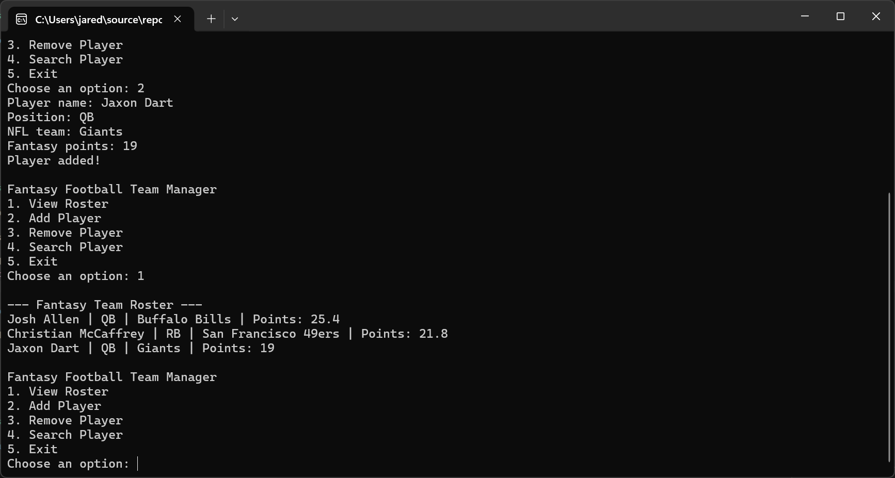

Computer Science Student | Aspiring AI Developer
I'm a Computer Science student at Full Sail University with an interest in programming, artificial intelligence, and software development. I've been building my skills in C++ while learning how to plan projects, debug problems, use GitHub, and turn ideas into working programs.
My goal is to keep improving as a developer and eventually work in AI and technology.
Right now I’m focused on getting better with C++, problem-solving, and building more projects.

A C++ program I built to manage a fantasy football roster. The program lets the user view the roster, add players, remove players, and search for players.
Tools: C++, Visual Studio, Git, and GitHub
Some of the main things I worked on were menu input validation, organizing the program with classes, handling player information, and making sure bad input didn't break the program.
One of the biggest things I learned from this project was how much easier development gets when I break a larger project into smaller tasks and test each part as I go.
Email: jaredfairess@gmail.com
GitHub: github.com/Fairess22